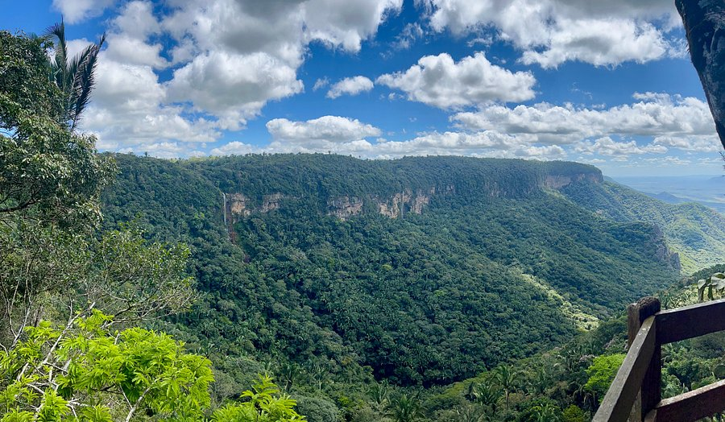
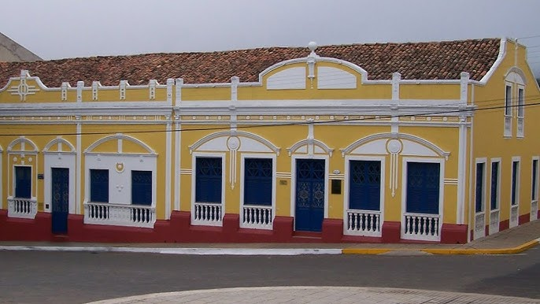
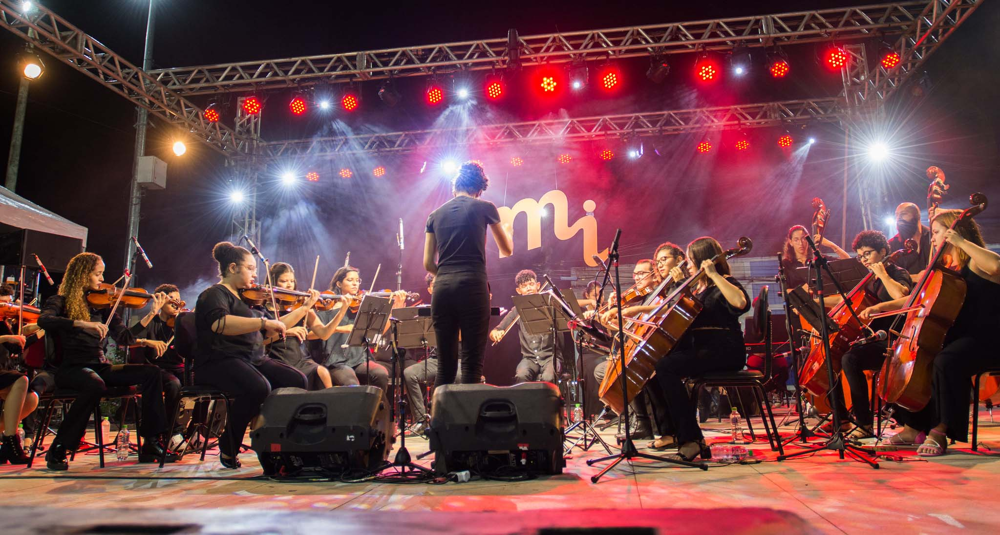
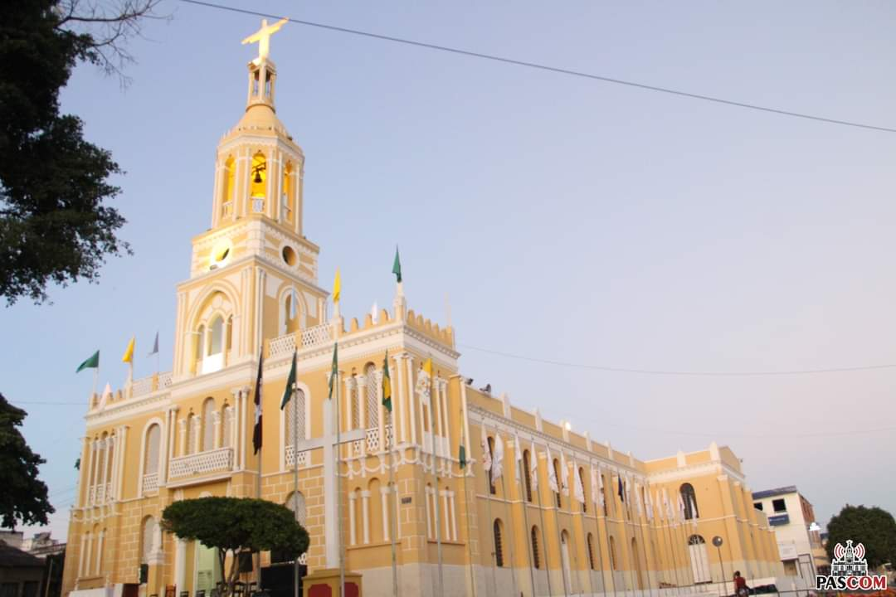
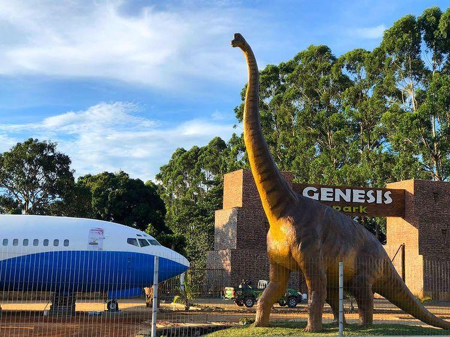

Bares e Restaurantes
Restaurantes temáticos, com culinária nordestina, italiana e francesa.

Você pode encontrar por aqui:
Restaurantes temáticos, com culinária nordestina, italiana e francesa.
Cachoeiras e mirantes de tirar o fôlego.
Casas e igrejas centenárias que contam o passado da região.
Festas regionais, quadrilhas e eventos culturais.
A fé presente em diversas expressões religiosas.
Opções de lazer, transporte e serviços turísticos.
